executions
executions.Rmd
data("executions")
executions <- executions[, c("execution_id", "perpetrator_race",
"perpetrator_sex", "perpetrator_age",
"execution_date", "execution_method")] |>
unique()
executions$execution_year <- as.numeric(format(as.Date(executions$execution_date), "%Y"))
table1(~ perpetrator_age + execution_method + execution_year | perpetrator_sex,
data = executions)| Female (N=18) |
Male (N=1598) |
Overall (N=1616) |
|
|---|---|---|---|
| perpetrator_age | |||
| Mean (SD) | 47.4 (9.18) | 42.6 (10.1) | 42.6 (10.1) |
| Median [Min, Max] | 48.0 [28.0, 62.0] | 41.0 [22.0, 83.0] | 41.0 [22.0, 83.0] |
| execution_method | |||
| Electrocution | 2 (11.1%) | 161 (10.1%) | 163 (10.1%) |
| Firing Squad | 0 (0%) | 4 (0.3%) | 4 (0.2%) |
| Gas | 0 (0%) | 16 (1.0%) | 16 (1.0%) |
| Hanging | 0 (0%) | 3 (0.2%) | 3 (0.2%) |
| Lethal Injection | 16 (88.9%) | 1414 (88.5%) | 1430 (88.5%) |
| execution_year | |||
| Mean (SD) | 2010 (9.63) | 2000 (9.58) | 2000 (9.59) |
| Median [Min, Max] | 2000 [1980, 2020] | 2000 [1980, 2030] | 2000 [1980, 2030] |
yearly_executions <- aggregate(execution_id ~ execution_year + perpetrator_sex,
data = executions, FUN = length)
yearly_executions <- yearly_executions |>
tidyr::complete(execution_year = full_seq(execution_year, 1), perpetrator_sex)
colnames(yearly_executions)[3] <- "count"
yearly_executions$count <- ifelse(is.na(yearly_executions$count),
0, yearly_executions$count)
ggplot(data = yearly_executions, aes(x = execution_year, y = count,
fill = perpetrator_sex,
color = perpetrator_sex)) +
geom_line() +
theme_minimal() +
scale_y_log10()
#> Warning in scale_y_log10(): log-10 transformation introduced
#> infinite values.